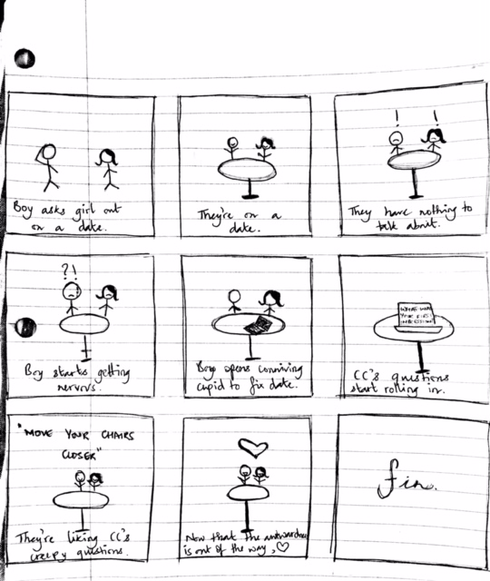
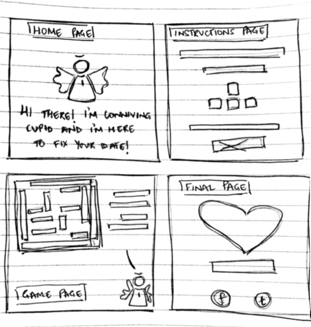

My final project has been inspired by a classmate’s art piece (Carrie Wang - "Speed Dating") where she created a date bot meant for speed dates. She used P5.js to set up Alex who’s always around to prompt the two people to answer certain questions for each other that will help get to know them better. Being a part of her experiment made me go through a roller coaster of emotions which ultimately led to my own journey of transformations (ref: Patterns of Transformations by Ida Benedetto). However, the inspiration really hit at the end of each 5 - minute long speed date where I got to know my classmates a little better, and what was great was that we managed to get to know each other within 5 simple minutes, as compared to 5 months of small talk. This led me to create a game - Help! My date’s cute but super boring.
Storyboarding
The storyboard below should help identify the source of the problem and the process to be followed with the designed solution.
I understand that my approach might be a little stereotypical (with the entire boy impressing girl concept), but I feel it might be the safest path to follow to make the other person understand. I also felt that without gamifying the idea, there would be a certain amount of pressure on the two individuals since they just have to blindly follow what Conniving Cupid asks them to do. And since they can see the end, they’re already prepared that the discomfort is only for a certain period of time, after which they might possibly be able to see the light at the end of the tunnel.
The Game
The game is called Conniving Cupid wherein the idea is simple and what many would call ‘sweet’, because its motive is to get two people to get to know each other. However, I added the alliteration of ‘conniving’ with ‘cupid’, because while his intentions might be pure, his path might not be. It is basically a maze where every keystroke generates a message from CC in which he’s asking them to perform a task. There are about 20 tasks which randomly appear as the heart tries to make it to the end of the maze.
Wireframing the Game
The game will comprise of four HTML pages
The Home Page that introduces the users to the game.
The instructions page to understand how to use the game in terms of functionality.
The main game page that requires JavaScript to run.
The last page that the users reach after getting the heart across the maze.
Conclusion
I strongly believe that this game should be able to help lots of individuals who end up facing more than a few awkward pauses during their first dates. And the beauty here lies in the fact that we're alleviating discomfort with discomfort to achieve a great level of comfort.